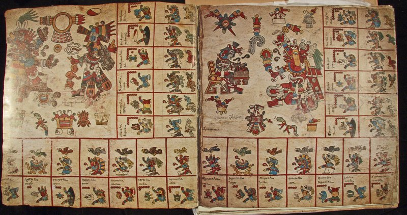

Los libros pictográficos de los aztecas

Un manuscrito en forma de biombo en amatl (papel de corteza), el Códice Borbónico es un calendario adivinatorio (tonalamatl/libro de los días) utilizado para adivinar el futuro con propósitos prácticos y rituales. Cada página representa una “semana” de trece días en un calendario de 260 días donde están prominentemente plasmados los dioses regentes y los símbolos asociados con la semana. En los recuadros al borde de cada página, los días de la semana nombrados y numerados (por puntos del 1 al 13) están acompañados por seres supernaturales que los rigen (pájaros y deidades). Una obra maestra del estilo azteca, el Códice Borbónico se cree hecho después de la llegada de los españoles. Observe las palabras en español que glosan el texto pictográfico de los días numerados.
Cortesía de Ellen T. Baird